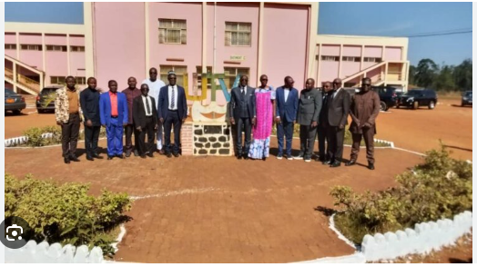

Accueil
Contact

IUT de Bandjoun
Présentation de l'IUT de Bandjoun
L'institut universitaire de technologie Fotso Victor de Bandjoun, IUT-FV, est l'un des 7 établissements de l'Université de Dschang. C'est un institut public créé en 1993, fondé en 1987 par le donateur Fotso Victor. Il représente environ 10% des effectifs de l'université de Dschang
.
Filières et spécialités disponibles L'IUT-FV prépare 4 diplomes:DUT,BTS,Licence de technologie LT, Licence Professionnelle LP.
Génie Civil
Génie Electrique
Génie Informatique
Maintenance Industrielle et Productique
Sciences de gestion
Génie thermique
Conditions d'admission L'admission se fait sur concours avec épreuves écrites + étude de dossier. les étudiants requis pour ce concours sont ceux de Baccalauréat:A,C,D,E,F2,F3,G1,G2,G3 ou alors les étudiants de Terminales Scientifiques:C,D,E,F,TI,MAV,MEM. les matières du concours sont la mathématique, la physique, le francais ou l'anglais
Particularité de l'IUT-FV La pédagogie orientée pratique: les examens sont organisés juste après la fin des cours, pour éviter l'oubli des acquis.L'évaluation suit les controles continus et travaux dirigés. 3800 étudiants ont composé sans incidentlors du premier semestre. Le directeur Pr René Tchinda insiste sur la discipline et la performance académique. Construit par Fotso Victor et céder à l'Etat en 1992. L'institut a une antenne à Yaoundé Nkolbisson